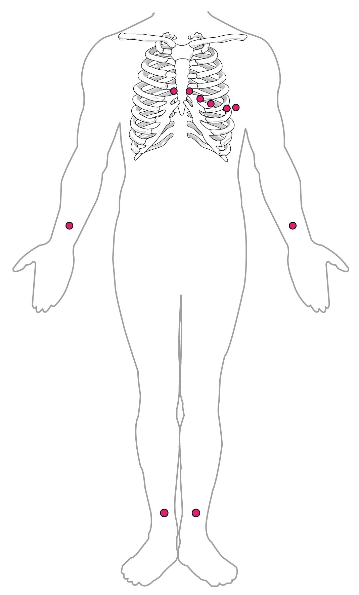

The electrocardiogram
1Why this matters
Ms. Brennan, 79, notices her heart fluttering while she gardens. At the clinic, a nurse places ten sticky electrodes on her chest, wrists and ankles. Within a minute the printout shows the problem: no P waves at all, just a wobbling line, and QRS complexes spaced with no pattern. Her atria are no longer contracting in step, and blood pooling there could form a clot.
2What this builds on
3Quick check before you start
1. Which structure normally sets the heart's rate?
- The AV node
- The SA node
- The Purkinje fibers
Show the answer
The SA node's pacemaker potential climbs fastest, so it reaches threshold first and resets every slower pacemaker.
- The AV node:
- Correct: The SA node:
- The Purkinje fibers:
2. Why does the signal pause at the AV node for about 0.1 second?
- AV node cells are small, joined by few gap junctions, and have slow calcium-driven upstrokes
- The AV node is several centimeters long
- The vagus nerve holds the signal until the atria are empty
Show the answer
The AV node conducts at only about 0.05 meters per second because of its small cells, few gap junctions and slow calcium-driven upstrokes.
- Correct: AV node cells are small, joined by few gap junctions, and have slow calcium-driven upstrokes:
- The AV node is several centimeters long:
- The vagus nerve holds the signal until the atria are empty:
3. During the plateau of a ventricular muscle cell's action potential, the cell is:
- At its resting potential
- Depolarized, near 0 mV
- Hyperpolarized
Show the answer
During the plateau, Ca²⁺ entering through L-type channels balances K⁺ leaving, so the cell stays depolarized near 0 mV for about 0.2 second.
- At its resting potential:
- Correct: Depolarized, near 0 mV:
- Hyperpolarized:
4Anatomy

5How it works, step by step
- The SA node fires and a wave of depolarization spreads across both atria.Current flows between depolarized and resting atrial muscle, and the skin electrodes record the P wave.
- The signal reaches the AV node, which conducts slowly.Almost no muscle is changing voltage, so the trace is flat: the PR segment.
- The signal races through the bundle branches and Purkinje fibers into the large ventricular muscle mass.The ventricles depolarize within about 0.1 second, drawing the tall, narrow QRS complex; atrial repolarization is hidden inside it.
- Every ventricular cell is now in its plateau, at about the same voltage.No current flows between regions, so the trace is flat again: the ST segment.
- Ventricular cells repolarize, spread out over time.The broad T wave appears, and the trace returns to baseline until the next P wave.
6Core concepts
7A common mistake
The wrong idea: An ECG shows how well the heart is pumping.
What actually happens: An ECG records only the heart's electrical activity. Contraction usually follows each electrical event, but the ECG cannot show it. A patient can have organized P waves, QRS complexes and T waves on the monitor and still have no pulse, because the muscle is not pumping effectively. To check pumping, you feel for a pulse.
8Check yourself
Anything you miss goes into your review queue.
1. Which electrical event does the P wave record?
- Depolarization of the atria
- Firing of the SA node alone
- Depolarization of the ventricles
- Repolarization of the atria
Show the answer
The P wave is the wave of depolarization spreading across both atria after the SA node fires.
- Correct: Depolarization of the atria: Correct. The atria contract just after the P wave.
- Firing of the SA node alone: The SA node is too small for its own activity to show from the skin. The P wave comes from the much larger mass of atrial muscle.
- Depolarization of the ventricles: Ventricular depolarization is the QRS complex.
- Repolarization of the atria: Atrial repolarization happens during the QRS complex and is hidden by it.
2. On the rhythm strip at the top of the figure, the tall R spikes are 4 large squares apart, and each large square is 0.20 second. What is the heart rate?
- 60 beats per minute
- 100 beats per minute
- 75 beats per minute
- 48 beats per minute
Show the answer
4 × 0.20 second = 0.80 second per beat, and 60 ÷ 0.80 = 75 beats per minute. The shortcut gives the same: 300 ÷ 4 = 75.
- 60 beats per minute: 60 per minute would need 5 large squares (1.0 second) between beats.
- 100 beats per minute: 100 per minute would need 3 large squares (0.60 second) between beats.
- Correct: 75 beats per minute: Correct. 300 ÷ 4 large squares = 75.
- 48 beats per minute: This treats each large square as 0.25 second, not 0.20.
3. Which measurement labeled in the enlarged part of the figure lengthens if conduction through the AV node slows?
- The QRS complex
- The ST segment
- The QT interval
- The PR interval
Show the answer
The PR interval runs from the start of atrial depolarization to the start of ventricular depolarization. Most of that time is the AV nodal delay, so slower AV conduction lengthens it.
- The QRS complex: The QRS complex measures how fast the ventricles depolarize, after the signal has left the AV node.
- The ST segment: The ST segment is the plateau after the ventricles have depolarized. The AV node plays no part.
- The QT interval: The QT interval covers ventricular depolarization and repolarization, which start after the AV node.
- Correct: The PR interval: Correct. The PR interval is the window on the AV node.
4. Mr. Osei, 68, feels well. His ECG shows a regular rhythm at 64 per minute. Every P wave is followed by a narrow QRS complex, but every PR interval measures 0.28 second. Which finding fits?
- Third-degree heart block
- Atrial fibrillation
- First-degree heart block
- Ventricular tachycardia
Show the answer
A PR interval longer than 0.20 second means the AV node conducts slowly. Because every P wave still reaches the ventricles, it is first-degree heart block.
- Third-degree heart block: In third-degree block no signals cross, so P waves and QRS complexes are unrelated. Here every P wave is followed by its QRS.
- Atrial fibrillation: Atrial fibrillation has no P waves and an irregular rhythm. This rhythm is regular with a P wave before every beat.
- Correct: First-degree heart block: Correct. Every beat conducts, but each is delayed at the AV node.
- Ventricular tachycardia: Ventricular tachycardia is fast, with wide QRS complexes and no linked P waves.
5. A student lists what each part of the ECG shows. One statement is wrong. Find it.
- The P wave shows atrial depolarization.
- The PR interval is mostly the AV nodal delay.
- The QRS complex shows ventricular depolarization.
- The ST segment is flat because the ventricles are fully repolarized.
- The T wave shows ventricular repolarization.
Show the answer
During the ST segment the ventricles are fully depolarized, sitting in the plateau of their action potential. With every cell at about the same voltage, little current flows between regions, so the line is flat.
- The P wave shows atrial depolarization.: This statement is right.
- The PR interval is mostly the AV nodal delay.: This statement is right. The PR interval spans the atria, the AV node and the conducting fibers, and the AV node takes most of the time.
- The QRS complex shows ventricular depolarization.: This statement is right.
- Correct: The ST segment is flat because the ventricles are fully repolarized.: This is the error. The ventricles are fully depolarized, not repolarized, during the ST segment. They repolarize during the T wave.
- The T wave shows ventricular repolarization.: This statement is right.
6. Ms. Brennan, 79, has palpitations. Her monitor shows narrow QRS complexes at about 120 per minute, spaced with no pattern at all, and a wobbling baseline with no P waves. What is happening in her heart?
- The atria are depolarizing chaotically, and the AV node passes signals at irregular moments
- The SA node is firing faster than normal but conduction is normal
- The ventricles are depolarizing chaotically and pump no blood
- No signals are crossing the AV node at all, so a backup pacemaker in the ventricles has taken over
Show the answer
This is atrial fibrillation. Chaotic atrial wavelets replace the P wave, and the AV node lets signals through at irregular times, giving irregularly irregular narrow QRS complexes.
- Correct: The atria are depolarizing chaotically, and the AV node passes signals at irregular moments: Correct. Narrow QRS complexes show the ventricles are still activated through the normal conducting system.
- The SA node is firing faster than normal but conduction is normal: Sinus tachycardia would be regular, with a P wave before each QRS complex.
- The ventricles are depolarizing chaotically and pump no blood: In ventricular fibrillation there are no QRS complexes at all. Hers are clear and narrow.
- No signals are crossing the AV node at all, so a backup pacemaker in the ventricles has taken over: A ventricular backup pacemaker would give a slow, regular rhythm with wide QRS complexes.
7. A patient in cardiac care has no pulse, but the monitor shows organized beats: P waves, narrow QRS complexes and T waves at 70 per minute. How can both be true?
- The monitor is showing a delayed recording
- The ECG records electrical activity, and the muscle is not contracting effectively in response
- The atria are pumping but the ventricles are not
- A normal rate and rhythm prove the heart is pumping, so the pulse check must be mistaken
Show the answer
An ECG records only electrical events. Normally contraction follows each one, but electrical activity can continue even when the muscle fails to pump, for example after severe blood loss or when fluid compresses the heart. The patient needs treatment for that cause, not a shock.
- The monitor is showing a delayed recording: Monitors display in real time. The mismatch is real, not a display delay.
- Correct: The ECG records electrical activity, and the muscle is not contracting effectively in response: Correct. Electrical activity and pumping are separate events, and the ECG shows only the first.
- The atria are pumping but the ventricles are not: The QRS complexes show the ventricles are depolarizing; the problem is that the muscle is not pumping effectively after that.
- A normal rate and rhythm prove the heart is pumping, so the pulse check must be mistaken: An ECG cannot show pumping. A normal-looking rhythm with no pulse is a recognized emergency.
9Summary
The electrocardiogram (ECG or EKG) records, from the skin, the summed voltage changes of the heart; each lead is one view, and depolarization moving toward a lead's positive electrode draws an upward deflection. The P wave is atrial depolarization, the QRS complex is ventricular depolarization (hiding atrial repolarization), and the T wave is ventricular repolarization. The PR interval, 0.12 to 0.20 second, is mostly AV nodal delay; the flat ST segment is the ventricular plateau; the QT interval spans the ventricular action potential. On paper running at 25 mm per second, rate = 300 ÷ large squares between beats. Arrhythmias include tachycardia (above 100), bradycardia (below 60), first-, second- and third-degree heart block, atrial fibrillation, ventricular tachycardia and ventricular fibrillation, which is treated by defibrillation. An artificial pacemaker fires when the heart's own rate is too slow.